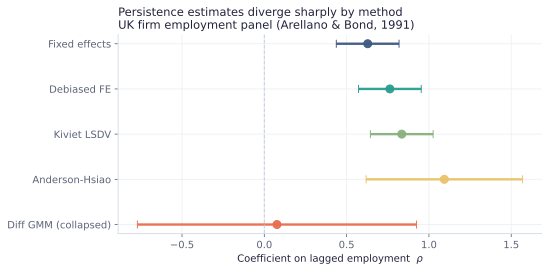
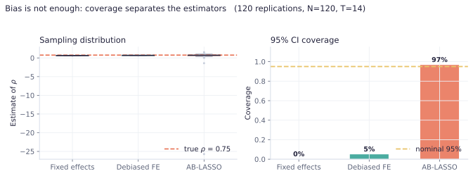
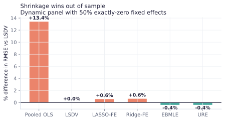
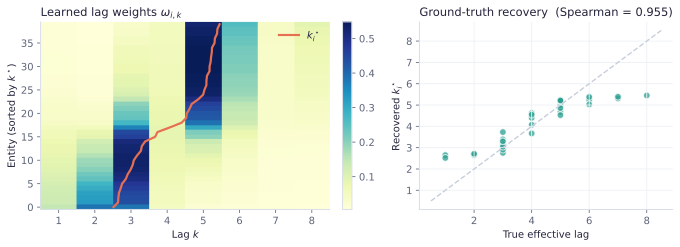

Python · Econometrics · Open source
dynpanelai
Machine learning and modern inference for dynamic panel data models — eight published methodologies behind one interface.


$pip install dynpanelai
Machine learning and modern inference for dynamic panel data models — eight published methodologies behind one interface.
Three difficulties compound. Each module in this package answers one of them.
Fixed effects are essential for persistent heterogeneity. But subtracting the unit mean also subtracts part of the error, so the demeaned lag and the demeaned error are mechanically correlated.
The bias is $O(1/T)$ and pushes $\hat\rho$ downward. It does not vanish as $N$ grows.
The classical fix instruments with lagged levels. But the number of moment conditions grows like $T^2$, and overfitting in the first stage reintroduces a bias of order $m/n$.
Valid inference needs $m^2/n \to 0$. In the COVID application that quantity is ≈ 168.
Modern designs add hundreds of controls — text, transactions, policy indicators. Regularisation is then unavoidable, and it biases every coefficient.
Naive post-LASSO inference is invalid: shrinkage error enters the target estimator at first order.
The unifying idea. Orthogonalisation and sample splitting. Build a moment condition that is locally insensitive to nuisance error (Neyman-orthogonal), and estimate the nuisance on data independent of where you score it. Then first-order nuisance error disappears and slow-converging machine learners become admissible.
Start from the shape of your panel, not from the method you have heard of. Answer three questions.
Every estimator shares the same PanelData container and returns the same PanelResults object, so they can be run on one panel and tabled side by side.
Arellano–Bond plus Anderson–Hsiao. One-step and two-step with the Windmeijer correction, FD and FOD transforms, genuinely collapsible instruments (55 → 15 on the employment panel), time dummies, Hansen J and approximate AR(1)/AR(2).
System GMM is disabled in this release — see Known limitations below.
Use when: T is short and controls are low-dimensional. Handles unbalanced panels.
Arellano & Bond (1991) · Blundell & Bond (1998) · Windmeijer (2005)
Four ways to remove the leading $O(1/T)$ term without instruments: analytical (DFE-A), split-panel jackknife over time or the cross-section, half-panel jackknife, and Kiviet/Bruno corrected LSDV.
Use when: you want the efficiency of the within estimator without its bias — or you want the DAB estimator.
Hahn & Kuersteiner (2002) · Dhaene & Jochmans (2015) · Chen, Chernozhukov & Fernández-Val (2019)
Selects the informative moment conditions by LASSO at each period, then estimates by IV — the only form whose moment function is Neyman-orthogonal to the first stage. Cross-sectional splitting with median aggregation over random splits.
Use when: T is long and $m^2/n$ is large, so plain Arellano–Bond is biased.
Chernozhukov, Fernández-Val, Huang & Wang (2024)
Partialling-out with blocked-time cross-fitting and a separation buffer, so nuisance functions are never fit on periods adjacent to what they score. Any scikit-learn learner. Cluster, two-way and Driscoll–Kraay variance.
Use when: controls are high-dimensional or nonlinear and you want one treatment effect.
Chernozhukov et al. (2018) · Sneller (2026)
Heterogeneous treatment effects when the CATE itself is high-dimensional. Neighbours-left-out cross-fitting, orthogonal Lasso, CLIME precision-matrix debiasing, and simultaneous bands from a Gaussian multiplier bootstrap.
Use when: you want effects across many groups and honest inference about which differ.
Semenova, Goldman, Chernozhukov & Taddy (2023)
Penalises slopes and fixed effects at different rates, because $NT$ observations identify each slope but only $T$ identify each unit effect. Desparsified via nodewise regression for honest, uniformly valid bands.
Use when: $p$ and $N$ both exceed $NT$ and you need inference on many coefficients at once.
Kock & Tang (2019) · van de Geer et al. (2014)
URE and Empirical Bayes shrinkage of the fixed effects, plus penalised-FE forecasting where the penalty falls only on the unit effects. Rolling-origin blocked CV with the one-standard-error rule.
Use when: the goal is out-of-sample accuracy rather than an unbiased coefficient.
Kwon (2026) · Cornejo & Sosa-Escudero (2026) · Liu, Moon & Schorfheide (2020)
Learns an entity-specific lag distribution conditioned on observable proxies, making the effective lag a structural output rather than a post-hoc explanation. Ships with the full L0–L3 audit protocol and permutation tests.
Use when: you want to know which units respond over which horizon, and to prove it.
Xu (2026) · optional extra: pip install dynpanelai[neural]
Enough to know what each estimator assumes and where it breaks.
A dynamic panel with unit effects:
$$y_{it} = \rho\, y_{i,t-1} + \theta\, d_{it} + \alpha_i + u_{it}.$$The within transform removes $\alpha_i$ but subtracts $\bar u_i$ from the error and $\bar y_{i,-1}$ from the regressor. Since $\bar y_{i,-1}$ contains $u_{it}$, the two are correlated, and
$$\mathbb E[\hat\rho_{FE}] - \rho \;\approx\; -\frac{1+\rho}{T-1},$$a downward bias that shrinks only in $T$, never in $N$.
Removes $\alpha_i$, but the transformed error becomes MA(1). Lags 2 and deeper remain valid instruments.
With $c_t=\sqrt{(T-t)/(T-t+1)}$. Removes $\alpha_i$ and leaves the error serially uncorrelated — more efficient, and compatible with cross-fitting.
A moment function $\psi(W;\theta,\eta)$ is Neyman-orthogonal at the truth when its derivative with respect to the nuisance vanishes:
$$\left.\frac{\partial}{\partial r}\,\mathbb E\bigl[\psi(W;\theta_0,\eta_0+r h)\bigr]\right|_{r=0}=0 .$$Nuisance error then enters only at second order, so the product-rate condition $\delta_Y\delta_D=o(n^{-1/2})$ suffices — each nuisance may converge slowly, as regularised machine learners do.
Why this matters practically. It is the difference between an estimator you can hand a random forest and one you cannot. Without orthogonality, regularisation bias transmits directly into your treatment effect, and no amount of sample size rescues it.
Orthogonality alone is not enough: the nuisance must be estimated on data independent of where the score is evaluated. Random i.i.d. folds leak in a panel, because the observation next to a held-out one is strongly correlated with it. Two fixes:
Cross-validated LASSO has no guarantee for the rate that orthogonal-score estimators need, and it under-penalises. The rigorous penalty is
$$\lambda_0 = 2c\sqrt{n}\,\Phi^{-1}\!\Bigl(1-\frac{\gamma}{2p}\Bigr),\qquad \lambda_j=\lambda_0\widehat\Upsilon_j,\qquad \widehat\Upsilon_j=\sqrt{\tfrac1n\textstyle\sum_i \hat e_i^2 x_{ij}^2},$$with loadings refined iteratively. In panels the loadings should be cluster-robust — pass clusters= to rlasso.
Assumptions you must check, not assume. DML and orthogonal Lasso need $\sqrt N/T\to0$. The weakly sparse panel Lasso needs $\sum_i|\eta_i|^\nu\le E$ with $E$ small. Every estimator in this package emits a warning when it detects that its own assumption looks violated.
Every number and figure below was produced by the package itself. Nothing is illustrative.
UK firm employment, 140 firms × 9 years — the canonical Arellano–Bond panel. The same coefficient, five ways.
| Coefficient | Fixed effects | Debiased FE | Anderson–Hsiao | Diff GMM (collapsed) |
|---|---|---|---|---|
| L1.n | 0.6279*** | 0.7628*** | 1.0936*** | 0.0573 |
| (0.0972) | (0.0972) | (0.2424) | (0.4414) | |
| L2.n | −0.1869** | −0.2770*** | — | 0.0223 |
| (0.0940) | (0.0940) | — | (0.1466) | |
| w (log wage) | −0.4344*** | −0.4100*** | −0.5566** | −1.6805** |
| (0.1235) | (0.1235) | (0.2571) | (0.7752) | |
| k (log capital) | 0.3904*** | 0.3623*** | 0.1354* | 0.4103*** |
| (0.0427) | (0.0427) | (0.0812) | (0.0823) | |
| Observations | 751 | 751 | 751 | 611 |
| Firms | 140 | 140 | 140 | 140 |

A Monte Carlo with known truth $\rho = 0.75$, 120 replications at $N=120$, $T=14$.

| Estimator | Bias | RMSE | 95% coverage | Verdict |
|---|---|---|---|---|
| Fixed effects | large, negative | high | 0% | Nickell bias dominates |
| Debiased FE (analytical) | reduced | moderate | 5% | Leading term only; T too small |
| AB-LASSO | small | low | 96.7% | Essentially nominal |


What this package does not yet do reliably. Published here rather than buried, because a silently wrong estimator is worse than a missing one.
system_gmm() raisesThe level-equation instrument block is implemented — stacked equations, block-diagonal Z, lagged differences plus a constant — but it does not validate. On a mean-stationary simulated panel where the extra moment conditions hold by construction, Hansen rejects at $p<0.001$ and the autoregressive coefficient comes back 0.34 against a true 0.75.
That pattern points at the instrument construction, not the data. The public entry point therefore raises NotImplementedError rather than return plausible-looking numbers under a "System GMM" label.
Use instead: diff_gmm(..., collapse=True), which recovers 0.778 on the same design.
xtabond2Checked against xtabond2 3.7.2 on webuse abdata: every coefficient, standard error, instrument count, Hansen statistic and sample dimension agrees to within 0.2%, at one step and two.
Getting there required two fixes: the one-step weight matrix needs the MA(1) kernel $H$ (2 on the diagonal, $-1$ adjacent) rather than $Z'Z$, and the Windmeijer correction evaluates its score at the second-step residuals, not the first. Both are now covered by regression tests. Full comparison.
Reported as [approximate]. They are a simplified m-test based on the within-unit correlation of residuals with their own lag, and do not net out the effect of parameter estimation on the variance.
Directionally reliable — AR(1) should reject and AR(2) should not — but not a substitute for the exact statistic near a decision boundary. On the employment panel it returns $p=0.048$ where xtabond2 returns $0.141$: the same direction, opposite verdict at 5%.
Why this section exists. Version 0.1.0 shipped collapse, time_dummies and level as silent no-ops: accepted, documented, and completely inert. The tests passed because they only checked that calls returned plausible numbers. Version 0.1.1 fixes all three and adds 17 tests that assert each option's structural consequence — instrument counts, stacked rows, block-diagonality — not merely that the call succeeds.
From a CSV file to a finished journal table. Every block runs as written.
# core
pip install dynpanelai
# with figures and the neural module
pip install "dynpanelai[all]"Long format: one row per unit-period. PanelData sorts, validates, and rejects duplicate (unit, time) pairs immediately.
import dynpanelai as dp
df = dp.datasets.load_abond_employment()
panel = dp.PanelData(df, unit="id", time="year")
print(panel)
# PanelData(N=140, T=9, obs=1031, unbalanced, ...)Lags are gap-aware. A firm missing 2003 gets NaN for its 2004 lag, not the 2002 value. A plain groupby().shift() would silently hand you the wrong number.
Two numbers decide which methods are even admissible.
import numpy as np
print("sqrt(N)/T =", np.sqrt(panel.N) / panel.T) # need → 0 for DML
m = panel.T * (panel.T - 1) // 2
print("m^2/(NT) =", m**2 / (panel.N * panel.T)) # need small for ABFunctional or object-oriented — both work.
res = dp.diff_gmm(panel, y="n", lags=2,
predetermined=["w"], exogenous=["k"],
gmm_lags=(2, 4), steps=2)
print(res.summary())| Test | You want | Because |
|---|---|---|
| AR(1) | rejects | The differenced error is MA(1) by construction |
| AR(2) | does not reject | Otherwise lag-2 instruments are invalid |
| Hansen J | does not reject, but p < 0.9 | p near 1.00 signals instrument proliferation, not a good model |
| Instrument count | fewer than units | Otherwise the weight matrix is singular and Hansen has no power |
results = {
"FE": dp.fixed_effects(panel, "n", lags=2, x=["w", "k"]),
"DFE-A": dp.debiased_fe(panel, "n", lags=2, x=["w", "k"]),
"Diff GMM": dp.diff_gmm(panel, "n", lags=2,
predetermined=["w"], exogenous=["k"]),
}
print(dp.comparison_table(results, params=["L1.n", "w", "k"]))The coefficient on $d$ is only the impact effect. The long run is $\theta/(1-\sum\rho)$, with a delta-method standard error.
lr, se = res.long_run("w", ["L1.n", "L2.n"])open("table1.tex", "w").write(
dp.comparison_to_latex(results,
caption="Employment dynamics in UK firms",
label="tab:employment")
)
from dynpanelai.report import comparison_plot
comparison_plot(results, "L1.n") # 300 dpi, greyscale-safeFull documentation. The user guide covers this in depth with five complete worked examples; the syntax reference documents every argument of every estimator; methods gives the derivations.
Two real economics panels ship inside the package, plus the Monte Carlo designs from each paper.
| Dataset | Units | Periods | Content | Source |
|---|---|---|---|---|
load_covid_counties() | 2,510 | 32 | US county COVID-19 case growth, school and college foot traffic, mask mandates, stay-at-home orders, gathering bans | Chernozhukov, Fernández-Val, Huang & Wang (2024) |
load_abond_employment() | 140 | 9 | UK firm log employment, wages, capital, industry output | Arellano & Bond (1991) |
High-dimensional controls, optional nonlinear $g_0$. Sneller (2026).
Bun–Kiviet design with predetermined treatment and $t$ innovations.
Controllable fraction of exactly-zero fixed effects.
Entity-conditioned lags with known ground truth.
If dynpanelai contributes to published work, please cite it — and the paper behind whichever estimator you used. Each module docstring gives the full reference.
@software{roudane_dynpanelai_2026,
author = {Roudane, Merwan},
title = {dynpanelai: Machine Learning and Modern Inference for
Dynamic Panel Data Models},
year = {2026},
url = {https://github.com/merwanroudane/dynpanelai},
version = {0.1.1}
}